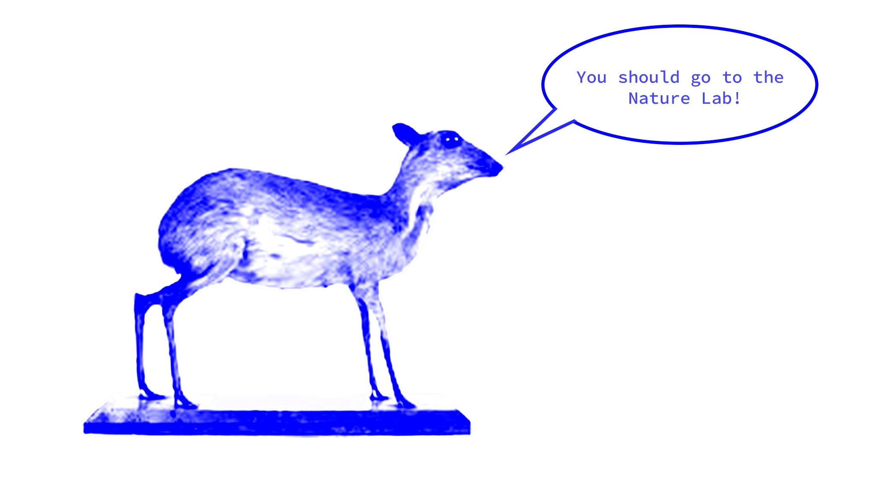

I wanted to make a fanpage for the Nature Lab because it’s a little known gem that I wish more people knew about. It’s an amazing resource for artists and anyone interested in the natural world, but it’s also just a cool spot to visit if you’re ever passing through Providence.
